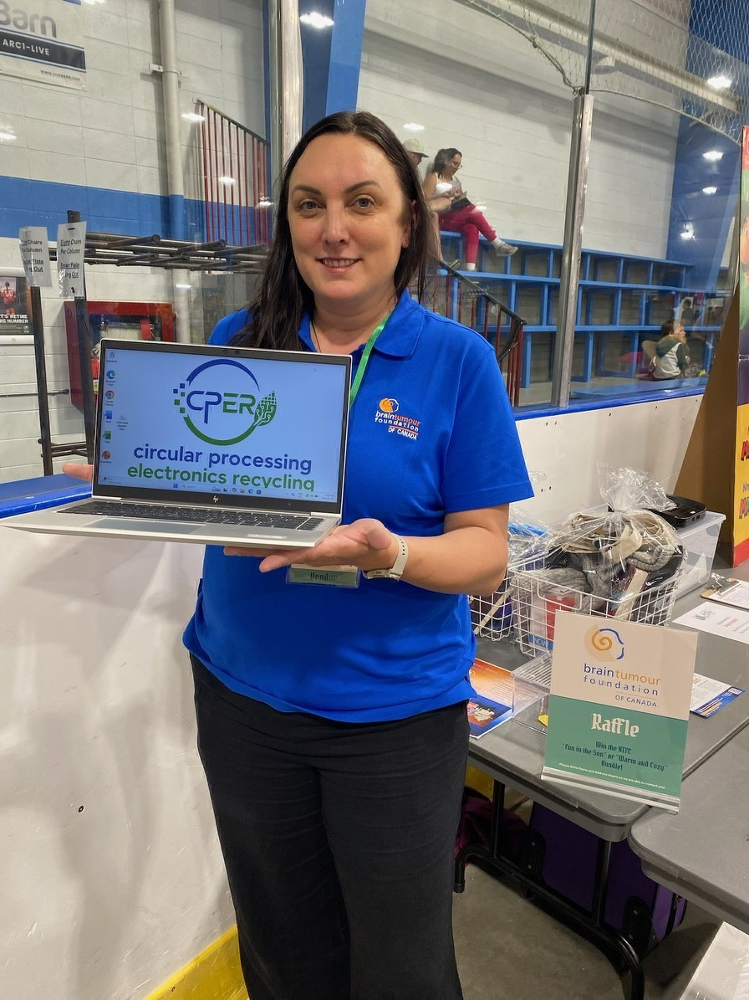
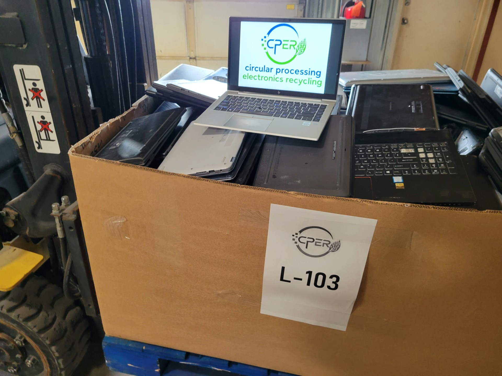
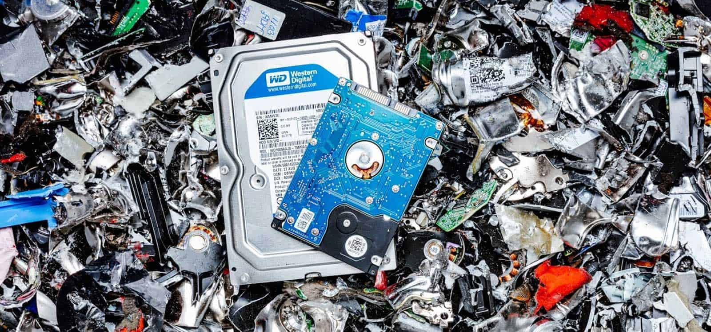
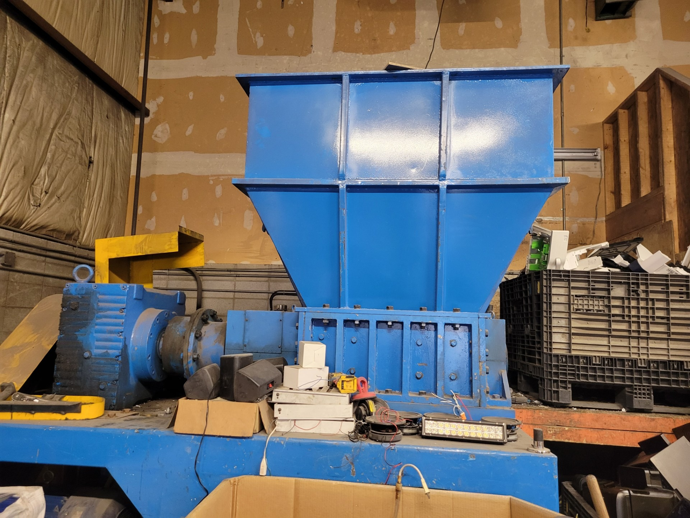
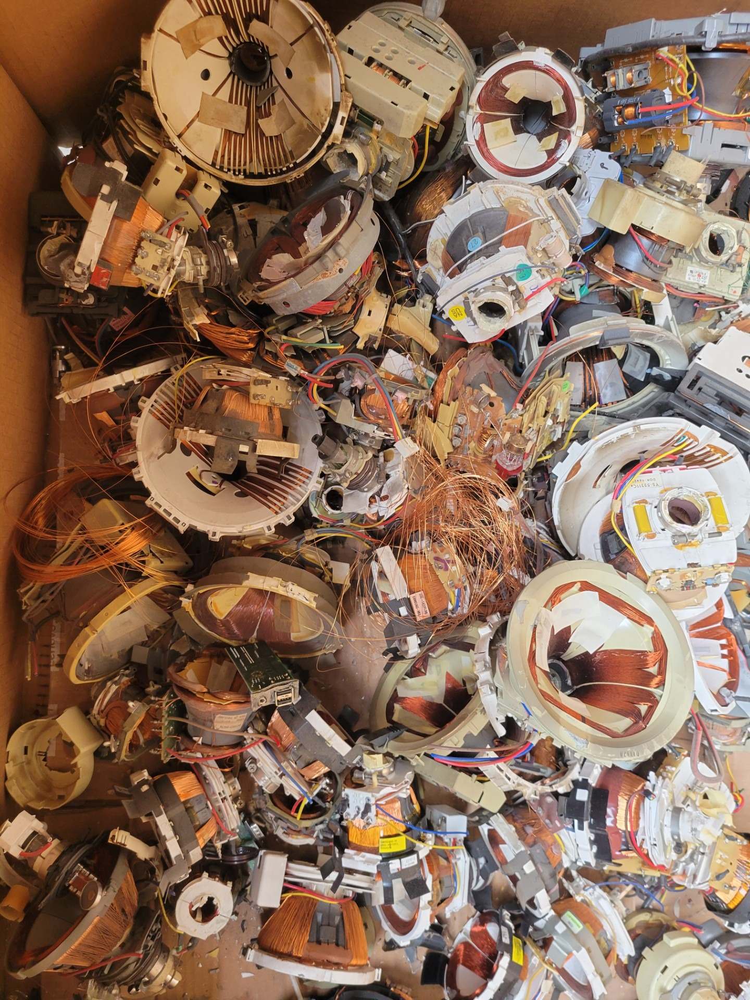

Recycle
We have electronics to get rid of
Computers, phones, servers, networking gear, monitors and other electronics can be collected for reuse or recycling.
Book a pickup →CPER makes it easy to clear out unwanted electronics without sending useful technology to waste. For qualifying commercial loads, pickup is free. We protect the data, reuse what we can, and responsibly recycle what we cannot.


A laptop may be old to one company and still perfectly useful to someone else. That’s why we look at equipment for reuse first.
Storage devices are securely erased or physically destroyed when required.
Working electronics are evaluated for refurbishment, resale, parts recovery or donation.
End-of-life equipment is directed to qualified Canadian downstream processors.
Whether you have a few laptops or a warehouse full of retired equipment, tell us what you have. We’ll help you figure out the simplest and most responsible way to handle it.

Computers, phones, servers, networking gear, monitors and other electronics can be collected for reuse or recycling.
Book a pickup →If equipment still has useful life, we look for ways to keep it working rather than breaking it down too soon.
See our reuse approach →Some newer or higher-value equipment may qualify for purchase, buyback or resale rather than standard recycling.
Request an evaluation →Charities and non-profit organizations can contact us about refurbished computers and other equipment that may be available.
Ask about equipment →You don’t need to know the industry terminology. Send us a list, a few photos, or even a rough estimate and we’ll take it from there.

We collect unwanted electronics and find the best next use for them.
Learn more →
Verified erasure or physical destruction, with reporting available when needed.
Protect your data →Inventory, testing, resale, buyback and documented disposition for larger IT refreshes.
See ITAD services →Some equipment is simply too old, damaged or obsolete to go back into service. At that point, CPER directs it into responsible end-of-life processing, where equipment is broken down and useful materials are separated for recovery.
That can include copper, steel, aluminum, circuit boards and other commodity streams. The goal is simple: recover what still has value and keep as much material as possible out of landfill.


We coordinate commercial pickups in major regions across Canada and can review nearby communities based on volume, equipment type and route availability.
Calgary and surrounding communities
Edmonton and surrounding communities
Vancouver and the Lower Mainland
Toronto and the Greater Toronto Area
Montreal and surrounding communities
Winnipeg and nearby communities
Regina and nearby communities
Saskatoon and nearby communities
If your organization tracks ESG, sustainability or waste-diversion goals, CPER can provide project reporting to help document what happened to retired electronics.
Depending on the project, reporting can include equipment quantities, serialized asset records, reuse outcomes, data-destruction documentation and end-of-life disposition. This gives your team practical information that can support internal ESG, sustainability and environmental reporting.
Document equipment that is refurbished, remarketed, donated or otherwise kept in service.
Serialized records and destruction certificates can help demonstrate how data-bearing assets were handled.
Capture recycling and disposition information for equipment that can no longer be reused.
“Thank you for your trust, your quick execution, and your professionalism.”IT Manager · Insurance company · Sherbrooke, QC
“Everyone else wanted to charge us to recycle it. Appreciate you taking it for free!”General Manager · Hotel · Calgary, AB
“Friendly, professional, and made the whole recycling process easy.”Office Manager · Church · Vancouver, BC
You do not need a perfect inventory. A rough count, a few model numbers and some photos are usually enough to start.